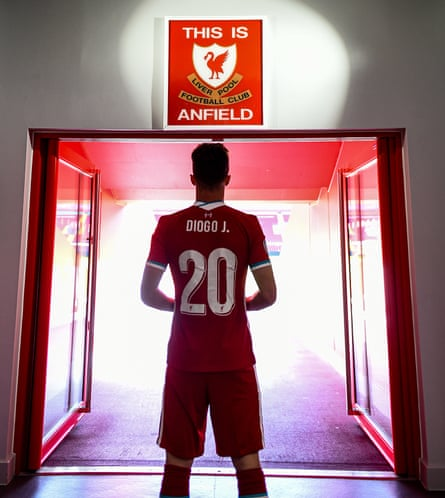
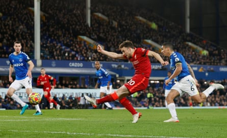

DIOGO JOTA (1996-2025)
Liverpool’s Diogo Jota has died in a car accident in Spain. It is devastating news and still hard to get our head around. Jota was 28, a father of three young children and married his long-term partner Rute Cardoso less than two weeks ago. His younger brother André Silva, a footballer for Penafiel, also died in the crash. It is an unimaginable loss for their friends and family to process and we hope they get all the support and love they need. At Anfield, where Jota was adored by Liverpool fans for his goalscoring instinct, pace and combative dribbling style, the club flag is at half-mast and scarves, shirts and other tributes bearing the forward’s name are still being left.
Supporters spoke of their love for an “adopted scouser” whose chant is among the most popular on the Kop. He was last seen at Anfield holding the Premier League trophy aloft as his name echoed around the ground – “oh his name is Diogo”. Many of those fans, including the writer of this email, and people in the wider football community did not know Jota, but his actions on the pitch made them feel something. Footballers provoke emotion and talented and committed ones, such as Jota, do it often enough to form a connection. So the sense of loss goes far and wide.
Diogo Jota after signing for Liverpool in 2020.Photograph: Andrew Powell/Liverpool FC/Getty Images
This has been evident in the range of tributes for Jota and his brother from Liverpool teammates, his former clubs, his Portugal captain Cristiano Ronaldo, rival Premier League sides, Uefa president Aleksander Ceferin and Portugal’s prime minister Luís Montenegro, who said Jota “was an athlete who greatly honoured Portugal’s name”. The Portuguese FA president Pedro Proença spoke of Jota’s warm personality, something that seemed evident in post-match interviews when the forward would often be smiling broadly and looking delighted to be living out his dream: “Much more than a fantastic player, who played almost 50 matches for the national A team, Diogo Jota was an extraordinary person, respected by all his teammates and opponents, someone with an infectious joy and a reference in the community itself.” Jürgen Klopp said he was “heartbroken” to lose “a great friend … we will miss you so much!”
Jota’s career has been a decorated one. He won the Championship, the Premier League, the FA Cup and League Cup as well as playing in a Champions League final with Liverpool. And in his last match, for Portugal against Spain, he won the Nations League for a second time. But at only 28 he was at the peak of his powers and had much more to give. It is unendingly sad. His 65 goals in 182 Liverpool appearances seem remarkable considering he was unfortunate with injury layoffs. Fans were desperate to see more of him – as the song goes – cutting inside and scoring for LFC. His last Liverpool goal was Jota in a nutshell. It was a derby winner against Everton in April, in which he wriggled through a group of defenders before taking his shot so early it left everyone flat-footed. And off he went, celebrating in front of those fans who loved him. Those fans who felt that connection. Those fans who won’t forget the memories he left behind and who, no doubt, will sing his name for years to come. RIP, Diogo and André. YNWA.

Diogo Jota celebrates with the trophy after winning the Premier League in May.Photograph: Phil Noble/Reuters
QUOTE OF THE DAY
“It doesn’t make sense. Just now we were together in the national team, just now you had got married. To your family, your wife, and your children, I send my condolences and wish them all the strength in the world. I know you will always be with them. Rest in peace, Diogo and André. We will all miss you” – Cristiano Ronaldo pays tribute to his international teammate Diogo Jota .
A CAREER IN PICTURES
From his time in Portugal’s Primeira Liga right through to Nations League and Premier League glory, we look back at Diogo Jota’s career .
Diogo Jota scores for Liverpool in their 4-1 derby win at Everton in 2021.Photograph: Phil Noble/Reuters
FOOTBALL DAILY LETTER
The death of Diogo Jota hits me hard as a Liverpool fan. It is salutary reminder that using a tragedy, any tragedy for a cheap gag is tasteless in the extreme. Football divides us sometimes, death should unite us” – Kev McCready.
Please send your letters to the.boss@theguardian.com .
LIVE TONIGHT
There will be a moment of silence before both of the Euro 2025 matches in Switzerland. Join Emillia Hawkins from 5pm BST for MBM coverage of Belgium v Italy, with Barry Glendenning covering Spain v Portugal at 8pm.
RECOMMENDED LISTENING
The Football Weekly Extra podcast is here for you .
NEWS, BITS AND BOBS
Finland are up and running at the Euros after beating Iceland 1-0 in the tournament opener, as are Norway, 2-1 victors over hosts Switzerland . “This was important, this means a lot for us … the goal was euphoria for me but it was damn important for the team as well,” said Ada Hegerberg.
Ada Hegerberg celebrates the decisive own-goal by Julia Stierli.Photograph: Michael Buholzer/AP
Martin Ho has signed a three-year deal to take over as Tottenham Women’s new head coach until 2028.
A consortium spearheaded by Gareth Bale has submitted an offer to buy his hometown club, Cardiff City.
Everton are closing in on the signing of Villarreal’s France Under-21 striker Thierno Barry for a fee of about £27m .
And Chinese third-tier club Changchun Xidu are counting the cost of trying to throw visiting opponents off their game, having been fined for placing superstitious paper charms in the away dressing room.
MOVING THE GOALPOSTS
Get ready for Wafcon 2024, just a year later than billed. Osasu Obayiuwana has more , including the return of Jorge Vilda.
STILL WANT MORE?
Two-time Ballon d’Or winner Aitana Bonmatí is back to spearhead Spain’s push for Euros glory. Nick Ames reports . And Ashifa Kassam explains how that kiss ended up transforming Spanish football .
Aitana Bonmatí in training.Photograph: Fabrice Coffrini/AFP/Getty Images
Xabi Alonso is relishing the value of Fede Valverde, as Sid Lowe explains .
John Duerden has written on Al-Hilal and the strength of Saudi football.
The Rumour Mill rolls on .
And check out all the latest men’s and women’s moves in the window.